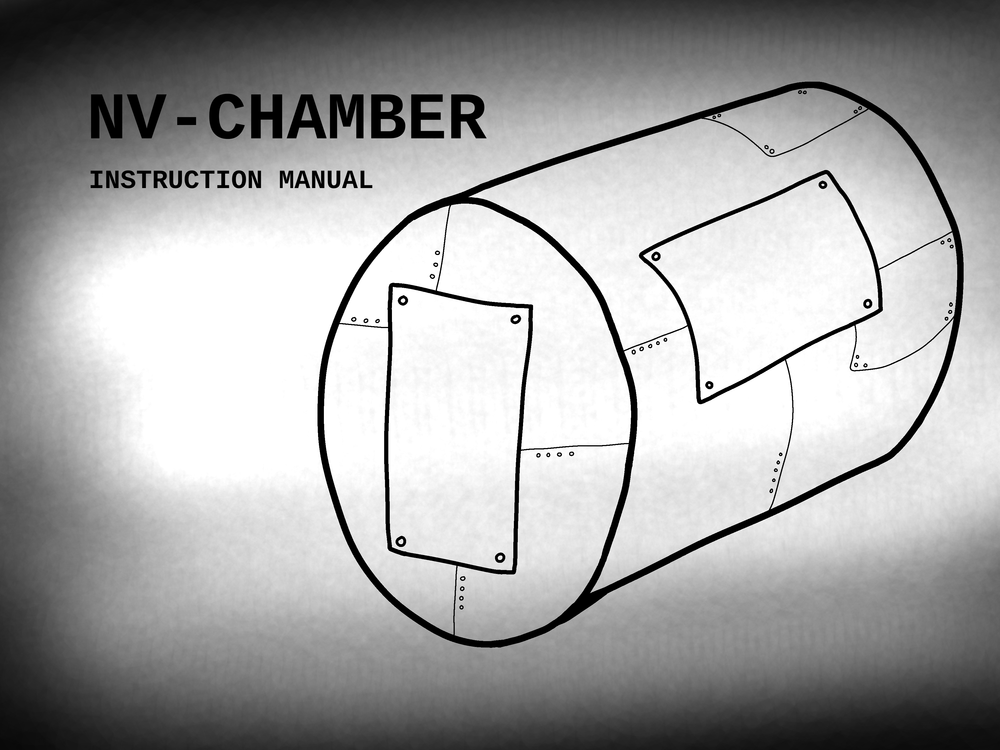
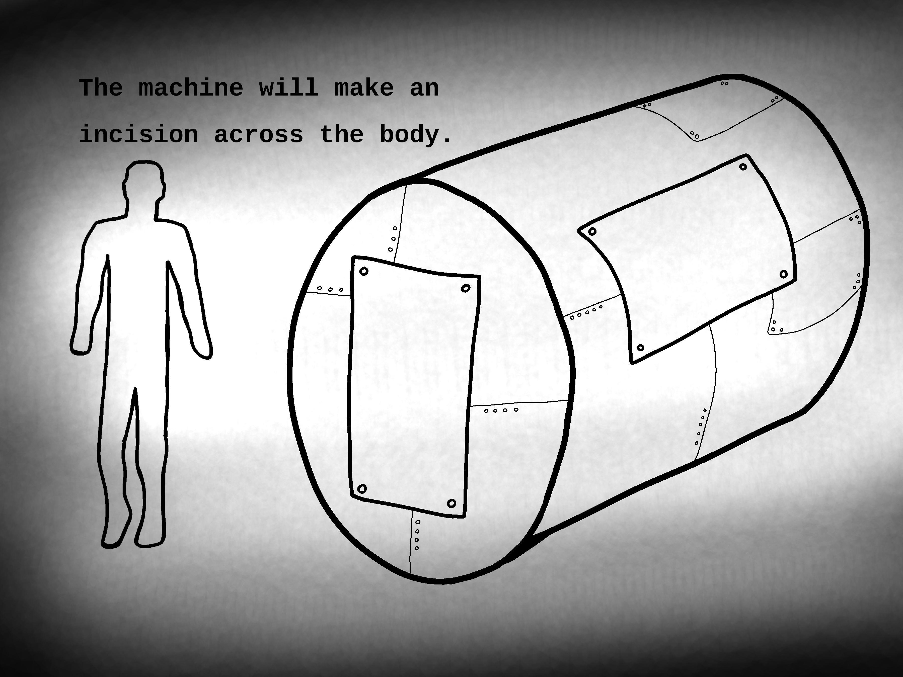
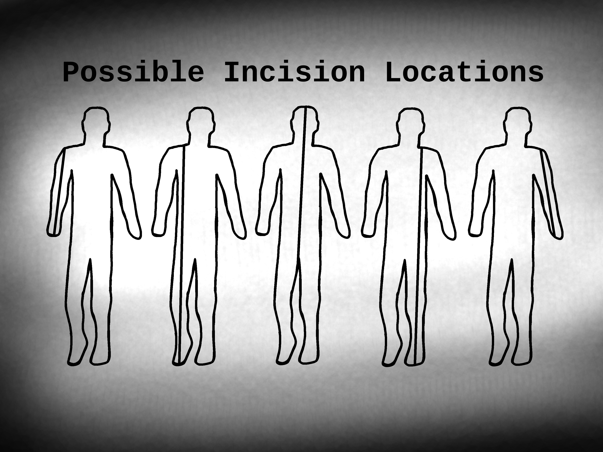
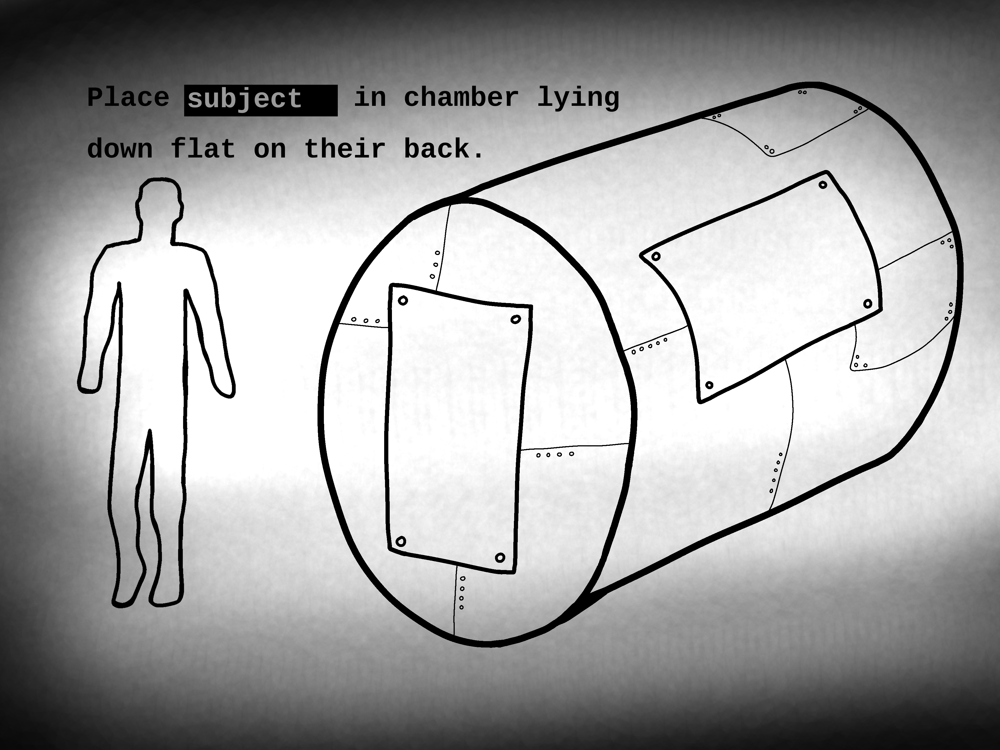
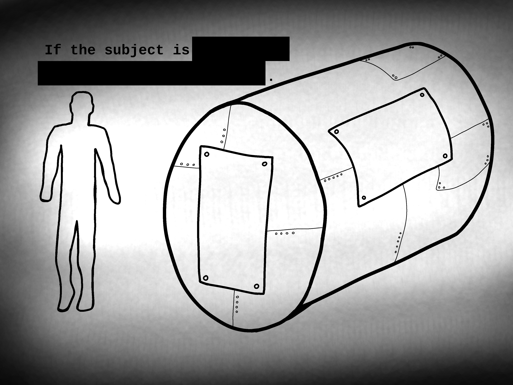

Code And ID#: ORX-2898
Location: Site #375
WARNING: UNDER NO CIRCUMSTANCES SHOULD THE PROCEDURE EVER BE INTERRUPTED.
Instructions:

This machine is approved for use in cases of extreme anomalous impairment, injury or disfigurment.
NOT for use in treatment of mild anomalous amnesia.
Administer sedatives or painkillers prior to the procedure on a case by case basis, as determined by a physician on staff. The procedure should not hurt.
During the procedure, the patient may speak, though they will remain unable to hear anyone until the procedure is complete.
Place patient in chamber lying flat on their back.
The machine will make an incision acrross the body.

The incision will heal within a few hours after the procedure.
The incision size an location may vary.

Hold the patient for monitoring for up to 24 hours.
No special post operational care is required.
The patient may immediatly return to their regular activities upon being released home.
Note: This file has been rewritten and updated. Previous versions of this file are available in the institute's archives at request.
Code And ID#: ORX-2898
Location: Site #375
Instructions:
The procedure should not hurt.
During the procedure, the subject may attempt to speak.
Staff carrying out the procedure should not respond.
Place subject in chamber lying flat on their back.

This version of the machine is not appropriate for use on X class entities. For X class entities, please use the Massive NV-Chamber Mark II instead.

The machine will make an incision acrross the body.
The incision will heal within a few hours after the procedure.
The incision size an location may vary.
Hold the subject for monitoring for up to 72 hours.
Note: This file has been rewritten and updated. Previous versions of this file are no longer available in the institute's archives due to loss or damage.
WARNING FILE CORRUPTED FILE CORRUPTED WARNING
INSTRUCTIONS: Administer sedatives or painkillers The procedure is unbearable.
WARNING: UNDER NO CIRCUMSTANCES SHOULD THE PROCEDURE EVER BE INTERRUPTED. OR CENSORED
Place sacrifice in chamber lying flat on their back.
If the sacrifice is and X class entity, seal the door shut.
The machine will make an incision acrross the body.
The incision will never fully heal.
Sacrifice will resume ability to appear functional within a few hours after the procedure.
Scar length, depth, position, and method are tailored to the sacrifice.
Monitor sacrifice with or without their knowledge for up to 24 hours the entire rest of their life.